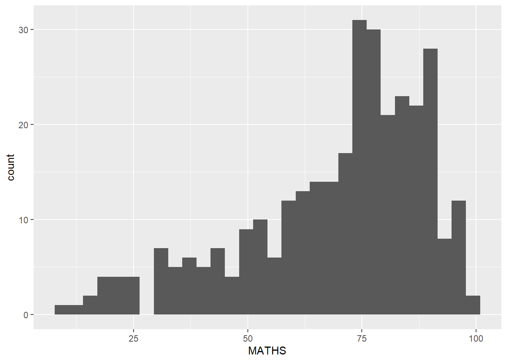
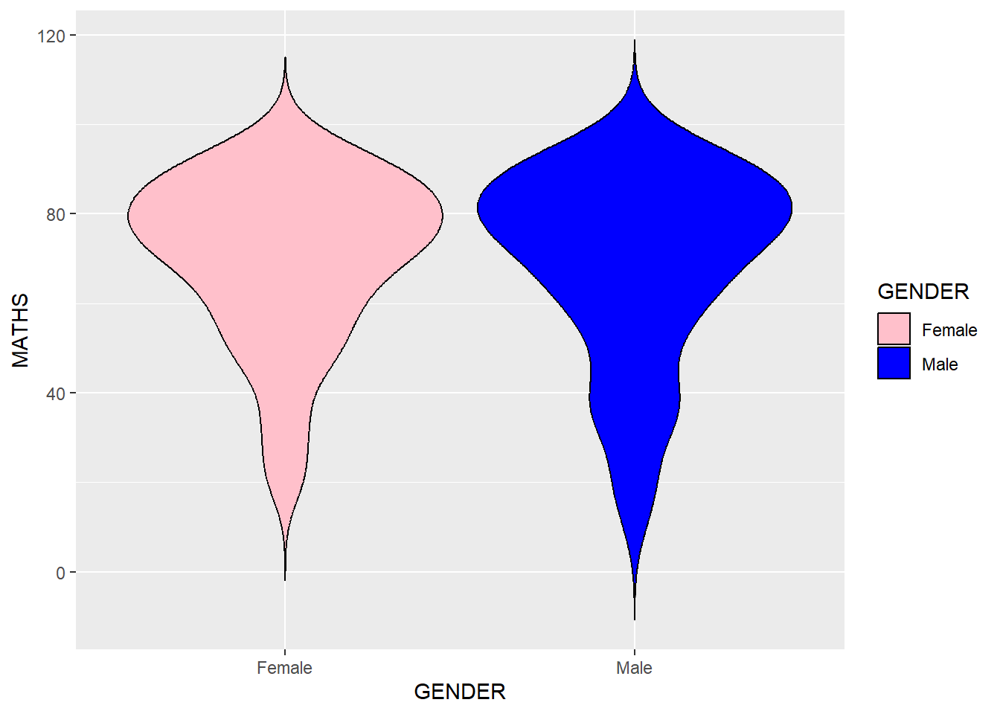

Code
pacman::p_load(tidyverse)In this chapter, we will learn the basic principles and key components of ggplot2. we will get hands-on experience using these components to create statistical graphics based on the principles of the Layered Grammar of Graphics. By the end, we will be able to apply ggplot2’s essential graphical elements to create elegant and functional statistical visualizations.
The code chunk below uses p_load() from the pacman package to check if the tidyverse packages are installed on my computer. If they are, they will be loaded into the R environment.If not, we will proceed to install pacman first.
pacman::p_load(tidyverse)We will import exam_data.csv into R environment by using the read.csv()function and assign it to exam_data
exam_data <- read_csv("data/Exam_data.csv", show_col_types = FALSE)We will check the dataset using below
glimpse(): provides a transposed overview of a dataset, showing variables and their types in a concise format.head(): displays the first few rows of a dataset (default is 6 rows) to give a quick preview of the data.summary(): generates a statistical summary of each variable, including measures like mean, median, and range for numeric data.duplicated():Returns a logical vector indicating which elements or rows in a vector or data frame are duplicates.colSums(is.na()): Counts the number of missing values (NA) in each column of the data frame.glimpse(exam_data)Rows: 322
Columns: 7
$ ID <chr> "Student321", "Student305", "Student289", "Student227", "Stude…
$ CLASS <chr> "3I", "3I", "3H", "3F", "3I", "3I", "3I", "3I", "3I", "3H", "3…
$ GENDER <chr> "Male", "Female", "Male", "Male", "Male", "Female", "Male", "M…
$ RACE <chr> "Malay", "Malay", "Chinese", "Chinese", "Malay", "Malay", "Chi…
$ ENGLISH <dbl> 21, 24, 26, 27, 27, 31, 31, 31, 33, 34, 34, 36, 36, 36, 37, 38…
$ MATHS <dbl> 9, 22, 16, 77, 11, 16, 21, 18, 19, 49, 39, 35, 23, 36, 49, 30,…
$ SCIENCE <dbl> 15, 16, 16, 31, 25, 16, 25, 27, 15, 37, 42, 22, 32, 36, 35, 45…head(exam_data)# A tibble: 6 × 7
ID CLASS GENDER RACE ENGLISH MATHS SCIENCE
<chr> <chr> <chr> <chr> <dbl> <dbl> <dbl>
1 Student321 3I Male Malay 21 9 15
2 Student305 3I Female Malay 24 22 16
3 Student289 3H Male Chinese 26 16 16
4 Student227 3F Male Chinese 27 77 31
5 Student318 3I Male Malay 27 11 25
6 Student306 3I Female Malay 31 16 16summary(exam_data) ID CLASS GENDER RACE
Length:322 Length:322 Length:322 Length:322
Class :character Class :character Class :character Class :character
Mode :character Mode :character Mode :character Mode :character
ENGLISH MATHS SCIENCE
Min. :21.00 Min. : 9.00 Min. :15.00
1st Qu.:59.00 1st Qu.:58.00 1st Qu.:49.25
Median :70.00 Median :74.00 Median :65.00
Mean :67.18 Mean :69.33 Mean :61.16
3rd Qu.:78.00 3rd Qu.:85.00 3rd Qu.:74.75
Max. :96.00 Max. :99.00 Max. :96.00 exam_data[duplicated(exam_data),]# A tibble: 0 × 7
# ℹ 7 variables: ID <chr>, CLASS <chr>, GENDER <chr>, RACE <chr>,
# ENGLISH <dbl>, MATHS <dbl>, SCIENCE <dbl>colSums(is.na(exam_data)) ID CLASS GENDER RACE ENGLISH MATHS SCIENCE
0 0 0 0 0 0 0 ggplot2 is an R package for creating data-driven graphics based on The Grammar of Graphics. It is also part of the tidyverse family specially designed for visual exploration and communication.
For more information, visit ggplot2
Lets compare how R Graphics, the core graphical functions of Base R and ggplot plot a simple histogram.
hist(exam_data$MATHS,col = "#4169e1")
ggplot(data=exam_data, aes(x = MATHS)) +
geom_histogram(bins=10,
boundary = 100,
color="black",
fill="#4169e1") +
ggtitle("Distribution of Maths scores")The Grammar of Graphics, introduced by Leland Wilkinson in 1999, provides a structured approach to creating meaningful data visualizations. It breaks graphs into semantic components like scales and layers, offering a framework to answer the question: What is a statistical graphic?
The key principles I’ve learned are:
Graphics are built from distinct layers of grammatical elements.
Meaningful plots are achieved through aesthetic mapping.
This grammar helps me see how complex graphics are composed, uncover connections between seemingly different visuals, and understand the foundation of diverse visualizations. It also guides me toward recognizing well-formed, meaningful graphics while acknowledging that not all grammatically correct visuals will make sense.
Figure shows the seven grammars of ggplot2: A layered grammar of graphics

The building blocks of the Grammar of Graphics are:
Let us call the ggplot( ) function using the code chunk below.
ggplot(data=exam_data)
ggplot().ggplot() initializes a ggplot object.Aesthetic mappings link data attributes to visual characteristics like position, color, size, shape, or transparency, allowing each characteristic to represent information. These mappings are defined using the aes() function, and each geom layer can have its own aes() specification.
The code below adds the aesthetic element into the plot.
ggplot(data=exam_data,
aes(x=MATHS,
y=ENGLISH))
Geometric objects are the visual marks on a plot. A layer combines data, aesthetic mappings, a geometric object (geom), statistical transformations (stat), and position adjustments. Layers are typically created using geom_ functions, with options to override default stat or position settings. Every plot requires at least one geom, and additional geoms can be added using the + operator.
Refer here for a more comprehensive list.
Below are some examples of geom_:

The code below plots a bar chart by using geom_bar().
ggplot(data=exam_data,
aes(x=RACE)) +
geom_bar()
In a dot plot, the dot width represents the bin width (or maximum width, depending on the binning method), and dots are stacked, with each dot signifying one observation.
The code below plots a dot plot chart by using geom_dotplot().
ggplot(data=exam_data,
aes(x = MATHS)) +
geom_dotplot(dotsize = 0.5)
To note that the y scale is not very useful, and can be misleading in this case.
To enhance the dotplot visualization, the below (non exhaustive) are some arguments that has been added:
scale_y_continuous()- to turn off the y-axis by setting it to NULLggplot(data=exam_data,
aes(x = MATHS)) +
geom_dotplot(binwidth=3.0,
dotsize = 0.8,
fill="#E15841",
color="#E1B941",
alpha=0.5 ) +
scale_y_continuous(NULL,
breaks = NULL) geom_histogram()in ggplot creates a bar plot that displays the distribution of a continuous variable by dividing the data into bins and counting the number of observations in each bin.
The code below plots a simple histogram by using values in MATHS field of exam_data.
ggplot(data=exam_data,
aes(x = MATHS)) +
geom_histogram() 
The default number of bins is 30, however one can always adjust the number of bins manually by using the bins() argument.
To enhance the histogram visualization, the below (non exhaustive) are some arguments that has been added:
ggplot(data=exam_data,
aes(x= MATHS)) +
geom_histogram(bins=20,
color="#A8E141",
fill="#E15841")The code below changes the interior colour of the histogram (i.e. fill) by using a sub-group of aes().
In this case, the fill is based on GENDER.
ggplot(data=exam_data,
aes(x= MATHS,
fill = GENDER)) +
geom_histogram(bins=20,
color="grey30")
We can also specify the color of the fill based on GENDER.
In this case, we used the scale_fill_manual() function to assign specific colors to each gender. E.g.:
Pink for Female
Blue for Male
ggplot(data = exam_data,
aes(x = MATHS,
fill = GENDER)) +
geom_histogram(bins = 20,
color = "grey30") +
scale_fill_manual(values = c("Female" = "pink", "Male" = "blue"))
This approach can be used to color, fill and alpha of the geometric.
The geom_density() function computes and visualizes a kernel density estimate, which provides a smooth approximation of the data’s distribution.
It serves as a useful alternative to histograms for continuous data, particularly when the data originates from an underlying smooth distribution.
The code below plots the distribution of Maths scores in a kernel density plot.
ggplot(data=exam_data,
aes(x = MATHS)) +
geom_density()
The code below plots two kernel density lines by using color or fill arguments of aes()
ggplot(data=exam_data,
aes(x = MATHS,
colour = GENDER)) +
geom_density()
Likewise, by using scale_color_manual() function, we can map the colors of each gender explicitly, where
Pink for Female
Blue for Male
ggplot(data = exam_data,
aes(x = MATHS,
colour = GENDER)) +
geom_density() +
scale_color_manual(values = c("Female" = "pink", "Male" = "blue"))
geom_boxplot() function visualizes continuous data by displaying five key summary statistics: the median, the upper and lower hinges (quartiles), the whiskers, and individual outliers.
ggplot(data=exam_data,
aes(y = MATHS,
x= GENDER)) +
geom_boxplot() 
To enhance the boxplot visualization, the below (non exhaustive) are some arguments that has been added:
ggplot(data = exam_data,
aes(y = MATHS,
x = GENDER)) +
geom_boxplot(fill = "#6A5ACD", # Fills the boxes with a color
color = "#ABE141", # Sets the border color of the boxes
outlier.color = "red", # Colors the outliers
outlier.shape = 16, # Sets the shape of the outliers
alpha = 0.7, # Adjusts the transparency of the boxes
width = 0.7) # Sets the width of the boxesLikewise, to specify different fill colors for female and male, we need to map the fill aesthetic to the Gender variable inside aes() and then define the specifc colors using scale_fill_manual().
Pink for Female
Blue for Male
ggplot(data = exam_data,
aes(y = MATHS,
x = GENDER,
fill = GENDER)) + # Map fill aesthetic to GENDER
geom_boxplot(color = "#ABE141", # Sets the border color of the boxes
outlier.color = "red", # Colors the outliers
outlier.shape = 16, # Sets the shape of the outliers
alpha = 0.7, # Adjusts the transparency of the boxes
width = 0.7) + # Sets the width of the boxes
scale_fill_manual(values = c("Female" = "pink", "Male" = "blue")) # Custom colorsNotches in box plots help visually determine if the medians of distributions differ. Non-overlapping notches indicate distinct medians.
The code below plots the distribution of Maths scores by gender in notched plot instead of boxplot.
ggplot(data=exam_data,
aes(y = MATHS,
x= GENDER)) +
geom_boxplot(notch=TRUE)
Likewise, additional arguments can be added to improve the overall visualization of the notched plot
ggplot(data = exam_data,
aes(y = MATHS,
x = GENDER,
fill = GENDER)) + # Add fill to differentiate genders
geom_boxplot(notch = TRUE,
outlier.colour = "red", # Highlight outliers in red
outlier.shape = 8, # Use a different shape for outliers
notchwidth = 0.5, # Adjust the notch width for emphasis
color = "black",
alpha = 0.9) +
scale_fill_manual(values = c("Female" = "pink", "Male" = "blue"))To refer to here for ggplot point shapes best tips and tricks
geom_violin creates violin plots, which are useful for comparing multiple data distributions. Unlike density curves, which can overlap and become hard to interpret, violin plots place distributions side by side, making comparisons clearer and more visually accessible.
The code below plots the distribution of Maths score by gender using violin plots.
ggplot(data=exam_data,
aes(y = MATHS,
x= GENDER)) +
geom_violin()
Likewise, additional arguments can be added to improve the overall visualization of the violin plot
scale_fill_manual() - assigns custom colors for Female and Maleggplot(data = exam_data,
aes(y = MATHS,
x = GENDER,
fill = GENDER)) + # Map fill to GENDER
geom_violin(trim = FALSE, # Show the full range of the data
scale = "width", # Adjust width for comparability
color = "black") + # Add a black outline to the violins
scale_fill_manual(values = c("Female" = "pink",
"Male" = "blue"))
geom_point() is useful for creating scatterplot.
The code below plots a scatterplot showing the Maths and English grades of pupils by using geom_point()
ggplot(data=exam_data,
aes(x= MATHS,
y=ENGLISH)) +
geom_point() 
Likewise, additional arguments can be added to improve the overall visualization of the scatter plot
ggplot(data = exam_data,
aes(x = MATHS,
y = ENGLISH)) +
geom_point(color = "blue", size = 3, alpha = 0.5, shape = 20)To refer to here for ggplot point shapes best tips and tricks
The code below plots the data points on the boxplots by using both geom_boxplot() and geom_point().
ggplot(data=exam_data,
aes(y = MATHS,
x= GENDER)) +
geom_boxplot() +
geom_point(position="jitter",
size = 0.5)Learnt about the different geometric objects such as geom_bar,geom_dotplot,geom_histogram,geom_density, geom_boxplot,geom_violin,geom_point etc.
Learnt about how to combine different geometric objects together in one chart - e.g.: geom_boxplot and geom_point
The Statistics functions statistically transforms data, as a form of summary.
Example include: - calculating the frequency of variable values - calculating the mean - determing confidence limits
There are two ways to use these functions: - add a stat_() function and override the default geom, or - add a geom_() function and override the default stat.
The boxplots below are incomplete because the means are not shown.
ggplot(data=exam_data,
aes(y = MATHS, x= GENDER)) +
geom_boxplot()
The code below uses the stat_summary() function to add mean values by replacing the default geometric layer (geom).
ggplot(data=exam_data,
aes(y = MATHS, x= GENDER)) +
geom_boxplot() +
stat_summary(geom = "point",
fun = "mean",
colour ="blue",
size=4) The code below uses the geom() function to add mean values by replacing the default geometric layer (geom).
ggplot(data=exam_data,
aes(y = MATHS, x= GENDER)) +
geom_boxplot() +
geom_point(stat="summary",
fun="mean",
colour="blue",
size=4) 
stat_summary explicitly where summary is calculated fun = "mean", and then visualized using the geometry geom="point". It provides more flexibility if one want to switch the geometry.geom_point with stat="summary", where it computes the mean and plots it directly.geom_point and overridding its default statistical transformation.The scatterplot below illustrates the relationship between Maths and English grades.
Adding a best-fit curve can enhance its interpretability.
echo=FALSE
ggplot(data=exam_data,
aes(x= MATHS,
y=ENGLISH)) +
geom_point() 
geom_smooth() is used to plot a best fit curve on the scatterplot.
ggplot(data=exam_data,
aes(x= MATHS, y=ENGLISH)) +
geom_point() +
geom_smooth(size=0.5)
The default method used is LOESS - Locally Estimted Scatterplot Smoothing which refers to a regression method used for smoothing data points in a scatterplot, useful for capturing non-linear trends in the data.
The default method can be overriden as shown below:
ggplot(data=exam_data,
aes(x= MATHS,
y=ENGLISH)) +
geom_point() +
geom_smooth(method=lm,
linewidth=0.5)
In this case, method = "lm" specifies that a linear regression line should be fitted to the data.
Refer here for more information on the different methods available in geom_smooth().
Likewise, additional arguments can be added to improve the overall visualization of the scatter plot
ggplot(data = exam_data,
aes(x = MATHS, y = ENGLISH)) +
geom_point() +
geom_smooth(method = "lm", color = "red", size = 1)
stat_() and geom_()geom_smooth()geom_smooth()Facetting in ggplot2 creates small multiples, or trellis plots, to display different subsets of data. This approach is an alternative to using aesthetics (such as color or shape) for displaying additional variables. There are two main types of faceting in ggplot2:
facet_wrap() : wraps multiple plots into a single panel, typically based on a single categorical variable. It will automatically arranges the plots into a grid.
facet_grid() : organizes plots into a grid based on the values of two categorical variables, one for rows and the other for columns.
facet_wrap arranges a 1D sequence of panels into a 2D layout, making better use of screen space, especially on rectangular displays. It is often more efficient than facet_grid() for displaying a variable across multiple categories
The code below produces a 2D matrix of ‘MATHS’ histograms grouped by variable ‘CLASS’ using facet_wrap(~CLASS).
ggplot(data=exam_data,
aes(x= MATHS)) +
geom_histogram(bins=20) +
facet_wrap(~ CLASS)
facet_grid creates a matrix of panels based on two discrete variables, one for rows and the other for columns. It is most useful when both variables have all possible combinations in the data.
The code below plots a trellis plot using facet_grid().
ggplot(data=exam_data,
aes(x= MATHS)) +
geom_histogram(bins=20) +
facet_grid(~ CLASS)
The Coordinates functions map the position of objects onto the plane of the plot.
There are a number of different possible coordinate systems to use:
coord_cartesian(): the default cartesian coordinate systems, where you specify x and y values (e.g. allows you to zoom in or out).coord_flip(): a cartesian system with the x and y flipped.coord_fixed(): a cartesian system with a “fixed” aspect ratio (e.g. 1.78 for a “widescreen” plot).coord_quickmap(): a coordinate system that approximates a good aspect ratio for maps.By default the bar charts in ggplot2 are vertical, as shown:

Using coord_flip(), we can flip the vertical bar chart to a horizontal one.
ggplot(data=exam_data,
aes(x=RACE)) +
geom_bar() +
coord_flip()
The scatterplot below is misleading as the x and y axes are not equal. This can create confusion to the readers.
ggplot(data=exam_data,
aes(x= MATHS, y=ENGLISH)) +
geom_point() +
geom_smooth(method=lm, size=0.5)
The code below will set both the x and y axis range to 0-100.
ggplot(data=exam_data,
aes(x= MATHS, y=ENGLISH)) +
geom_point() +
geom_smooth(method=lm,
size=0.5) +
coord_cartesian(xlim=c(0,100),
ylim=c(0,100))
Themes control elements of the graph which are not related to the data such as
background color
fonts size
gridlines
labels color
Some of the Built-in themes include:
theme_gray(): default theme, with a light gray background and white gridlines.
theme_bw(): theme with a black-and-white color scheme - white background, black gridlines and axis lines
theme_classic(): theme with a minimalist look - white background and no gridlines
The list of all other themes available can be found at this link
The code below plot a horizontal bar chart using theme_gray()
ggplot(data=exam_data,
aes(x=RACE)) +
geom_bar() +
coord_flip() +
theme_gray()
The code below plot a horizontal bar chart using theme_bw()
ggplot(data=exam_data,
aes(x=RACE)) +
geom_bar() +
coord_flip() +
theme_bw()The code below plot a horizontal bar chart using theme_classic()
ggplot(data=exam_data,
aes(x=RACE)) +
geom_bar() +
coord_flip() +
theme_classic()
We can further customize the chart by additional arguments using theme().
ggplot(data=exam_data,
aes(x=RACE)) +
geom_bar(fill="skyblue", color="black", size=0.7) +
coord_flip() +
theme_minimal() +
theme(panel.background = element_rect(fill = "lightgrey",
color = "white"))library(ggplot2)echo=FALSE: Hides the code while executing it to display the plot in the final output1. Is it possible to add mean, median and a title on histogram?
Before:
ggplot(data=exam_data, aes(x = MATHS)) +
geom_histogram(bins=10,
boundary = 100,
color="black",
fill="#4169e1") +
ggtitle("Distribution of Maths scores")
After:
geom_vline(): adds vertical lines for mean and median
labs(): used to set the title and add a label for the legend
scale_color_manual(): set the colors for mean and median
# Calculate mean and median
mean_value <- mean(exam_data$MATHS, na.rm = TRUE)
median_value <- median(exam_data$MATHS, na.rm = TRUE)
# Create a data frame for the mean and median lines
line_data <- data.frame(
value = c(mean_value, median_value),
type = factor(c("Mean", "Median"))
)
# Create the histogram with mean and median lines and a legend
ggplot(data = exam_data, aes(x = MATHS)) +
geom_histogram(bins = 10,
boundary = 100,
color = "black",
fill = "#4169e1") +
geom_vline(data = line_data, aes(xintercept = value, color = type),
linetype = "dashed",
size = 1) +
scale_color_manual(values = c("Mean" = "red", "Median" = "green")) +
labs(title = "Distribution of Maths Scores",
x = "Maths Scores",
y = "Frequency",
color = "Statistics") +
theme_minimal()2. Exploring other useful combinations of geometric objects in ggplot2?
Box plot with jittered points (geom_boxplot()+ geom_jitter())
Use case: To see the spread of ENGLISH scores across Gender, and identify any outliers.
ggplot(data=exam_data, aes(x=GENDER, y=ENGLISH)) +
geom_boxplot(fill="lightblue") + # Box plot for distribution
geom_jitter(width=0.1, size=1, alpha=0.7) # Jittered points for individual dataConclusion:
Female students tend to have a slightly higher median English score compared to male students.
Male students exhibit greater variability in their English scores, with a wider range of scores observed compared to female students.
library(ggplot2)